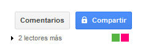
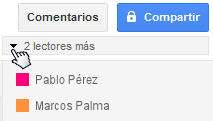

Una de las principales características de Drive es la posibilidad de colaboración en línea.
Cuando editamos un archivo o documento compartido (o lo editan las personas con las que compartimos), este se actualiza y cada vez que se acceda encontraremos la última versión editada. De esta manera, evitamos intercambiar el archivo o documento por correo electrónico cada vez que alguien realiza un cambio.
Podremos trabajar colaborativamente con todos nuestros archivos. Si trabajamos sobre documentos creados con las aplicaciones nativas de Drive (documentos, hojas de cálculo o presentaciones), podremos ver qué cambios se efectúan en el documento a tiempo real y sabremos cuando otro usuario tiene abierto el documento.

Así mismo, todos los archivos registran un historial, pudiendo recuperar versiones antiguas de un mismo documento o archivo.
Cuando trabajamos sobre aplicaciones nativas de Drive (documentos, hojas de cálculo o presentaciones) tenemos la ventaja de poder realizar un trabajo colaborativo a tiempo real. Esto significa que puede haber muchas personas trabajando sobre el mismo documento a la vez y todos podrán ver al instante los cambios realizados por el resto de usuarios.
Al abrir junto con otras personas, un documento que hayamos compartido previamente, veremos en la parte superior derecha el número de lectores y sus nombres de usuarios.

Así mismo, todos los archivos registran un historial, pudiendo recuperar versiones antiguas de un mismo documento o archivo.
Al trabajar con otro tipo de archivos, no tendremos la posibilidad de realizar un trabajo en tiempo real mientras editamos el archivo.
Para visualizar los cambios, los participantes deben trabajar de forma organizada para no pisar el trabajo del otro y deberán actualizar la vista para ver los cambios que se realicen en el archivo.
Aunque no tengamos la posibilidad del trabajo simultáneo, podremos abrir el archivo junto con varias personas y realizar comentarios o chatear mientras se visualiza el archivo.
Al igual que ocurre con los documentos, al abrir un documento que hayamos compartido previamente, veremos en la parte superior derecha el número de lectores y su nombre de usuario.
Los comentarios son muy útiles para incorporar anotaciones a un documento o archivo. Estas anotaciones podemos utilizarlas tanto para nuestro trabajo individual como colaborativo, pudiendo realizar una comunicación asíncrona con diferentes usuarios con los que compartimos archivos.
Si estamos trabajando sobre un documento de Drive, podremos insertar un comentario sobre una selección. Para ello, seleccionamos un texto o un elemento y luego seleccionamos "Insertar" y luego "comentario". Podremos distinguir los comentarios de cada usuario que comparte el documento.
Tanto sobre documentos como archivos (salvo aquellos que se crearon con una de las aplicaciones que instalemos posteriormente), encontramos el botón "Comentarios", este botón permite incorporar comentarios globales, que pueden utilizarse para realizar un debate agrupado por temas y respuestas esquematizadas.
Otra de las ventajas del trabajo colaborativo es la de poder chatear con nuestros compañeros desde la vista del documento o archivo (salvo aquellos creados con aplicaciones que instalemos posteriormente).
Una vez abierto el documento, y haya más gente visualizando el documento, podremos comenzar un chat con ellos. De esta manera, podemos analizar conjuntamente un documento o archivo abierto e intercambiar opiniones mientras trabajamos.
Para escribir mensajes, lo haremos desde la caja de texto que se encuentra en la parte inferior derecha y luego pulsar la tecla Intro.
Veremos los mensajes en orden de aparición, cada mensaje con el nombre de usuario que lo ha escrito.
Cuando trabajamos con archivos compartidos con varias personas, todos podremos ver la última versión, pero es recomendable que cuando hagas un cambio notifiques a tus colaboradores para que puedan ver los cambios que has realizado.
Para ello, hay una opción muy práctica que permite contactar con todas las personas con las que compartes un archivo. Para ello debemos hacer clic derecho sobre el archivo y luego en el menú seleccionar en Compartir la opción "Enviar un correo electrónico a todos los colaboradores".
Una vez seleccionada esta opción, veremos una ventana donde encontramos, entre otras cosas, el asunto, el campo para el mensaje y los destinatarios del mensaje que serían las personas con las que compartimos el archivo. Si lo deseamos podemos desmarcar algún colaborador.
Una vez escrito el mensaje, debemos hacer clic sobre el botón "Enviar".